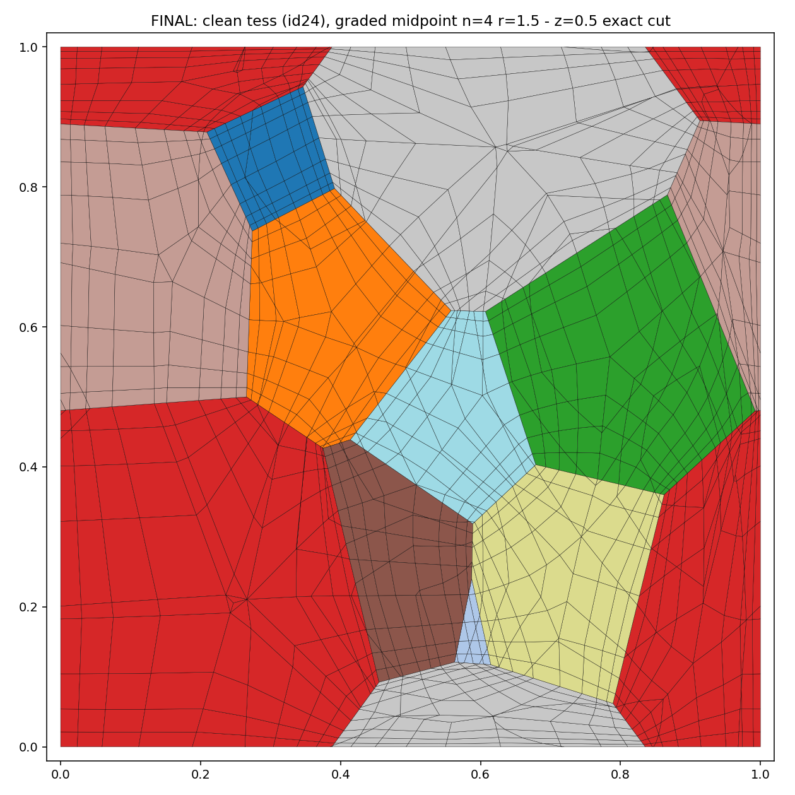
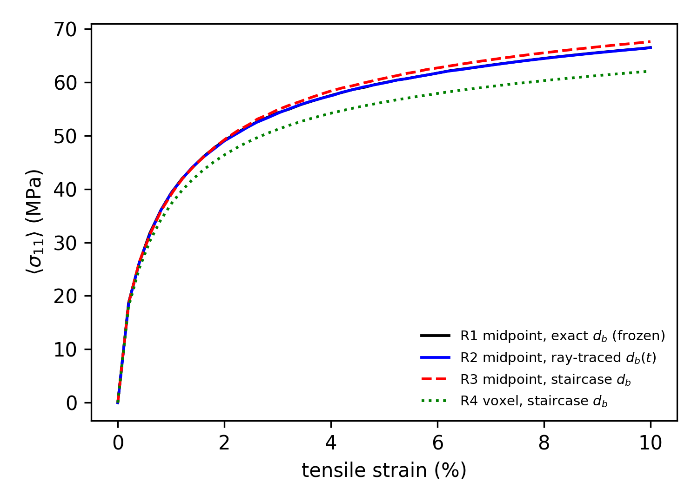
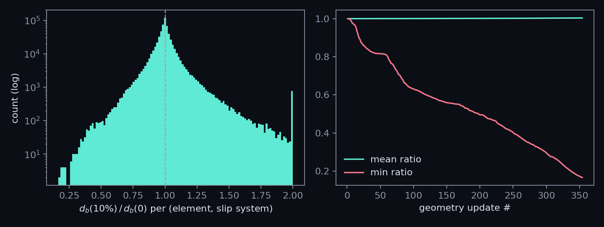
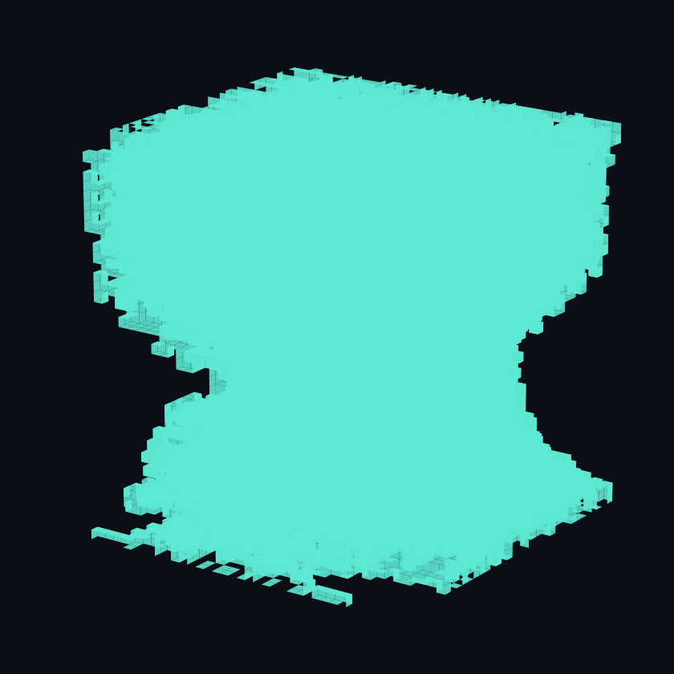

tessellation-exact geometry · machine-precision periodicity · C3D8R · graded to the boundary
Crystal-plasticity RVEs are usually voxel meshes: periodic boundary conditions are trivial, but every grain boundary becomes a staircase. Conforming meshes fix the geometry but are tetrahedral, and node-matched periodicity is usually sacrificed. PERHEX gives all four properties at once — measured on the same 20-grain microstructure (voxel N=40 vs PERHEX):
Any model input measured on the mesh geometry inherits these errors — GB tractions for decohesion, slip-transfer criteria evaluated on facets, and distance-to-boundary fields (see the GB-distance study).
drag to orbit · scroll to zoom · every colored patch boundary you see is an exact tessellation plane
R1: aluminium, Kₙ/dₚ GB storage active, explicit state update, 328 increments to 10 % — surface colored by σ₁₁
Every vertex of a generic Laguerre cell touches exactly three edges and three faces. Each cell therefore splits into one hex per vertex, with corners
— the vertex, three edge midpoints, three face centroids, and the cell centroid. A grain-boundary face is covered by quads whose four corners all lie in the face plane: planarity is exact by construction, not an approximation.
The periodic seed set plus its 27 images is re-tessellated on the unit cube, so
opposite boundary traces are exact translates of each other; a cut-position
optimizer keeps the cube planes away from tessellation vertices. Opposite-face
node sets then match to <10⁻¹² and standard 3-dummy
*EQUATION PBCs apply directly.
Each coarse hex is refined n³ with one global geometric schedule tᵢ = (rⁱ−1)/(rⁿ−1). All three local zero-planes of a corner hex lie on cell faces, so the same schedule refines toward every grain boundary — and because it is shared by all hexes, conformity and periodicity are preserved bitwise.

# 1. periodic tessellations (Neper >= 4), screened for minimum feature size
bash pick_tess.sh # candidates cand_*.tess
python eval_tess.py # rank by min edge; best -> rve.tess
# 2. cube cut + midpoint hexes + graded refinement (n=4, ratio=1.5)
python -c "from build_cube_rve import make_cut_tess; make_cut_tess()"
python gen_midpoint_hex.py 4 1.5
# 3. self-contained Abaqus deck (mesh + PBC + per-grain material)
python gen_mp_deck_oxford.py # -> oxford_mp/rve_oxford.inp
# 4. run with OXFORD-UMAT
abaqus job=rve_oxford user=OXFORD-UMAT.f cpus=8 double=bothRequirements: Neper ≥ 4.10 with gmsh 4.8.x, Python 3 + numpy,
Abaqus. The deck is fully self-contained (mesh, PBC equations, per-grain
orientations and properties in one .inp).
Everything about the microstructure is set at the Neper call and flows through unchanged:
| property | where |
|---|---|
| grain count | neper -T -n <N> |
| size / shape distribution | -morpho — the default
gg is lognormal diameq; any Neper morphology spec works |
| texture / ODF | -ori (random, fiber, ODF sampling, or a
per-grain file); orientations are read back from the tessellation's
*ori section |
| physical size | unit cube × your units; dₚ tables scale via
PERHEX_LPHYS (default 25 μm) |
| resolution / grading | gen_midpoint_hex.py <n> <ratio> |
oxford-patch/ adds the Haouala-type grain-boundary dislocation
storage term to the Kocks–Mecking model of
OXFORD-UMAT
(6 small patches + one new file; K_s = 0 is bit-identical to
upstream):
where dₚ is the slip-direction distance to the nearest grain boundary, per element and slip system. Three dₚ modes:
| mode | dₚ | mechanism |
|---|---|---|
dbconvect=0 | frozen t=0 table | literature practice (Haouala 2018: “computed and stored at the beginning… assumed not to change”) |
dbconvect=1 | chord convection | dₚ(t) = dₚ₀·|F·s₀|, purely local |
dbconvect=2 | live ray-trace | GB facet quads tracked by their actual nodes (*Node File
→ .fil → URDFIL each increment);
Möller–Trumbore against precomputed candidate lists; the t=0 trace
reproduces the exact Laguerre distances to machine precision |
The dₚ tables come from exact closed-form ray tracing in the
periodic Laguerre diagram (gen_db_table.py), with staircase-geometry
variants for corruption studies. Details in
oxford-patch/README.
mp_mode=threads and rate-limits the
per-increment dₚ change (±5 %): the raw facet-tracked distance steps
discontinuously when the hit facet changes, and feeding that step straight into
the explicit hardening update collapses the time increment (measured).The staircase geometry corrupts dₚ as a model input, before any mechanics happens — measured at the same points and directions, exact Laguerre planes vs rays marched through the voxel field:
| evaluation points | median |rel. error| | p90 |
|---|---|---|
| 64,000 voxel centers | 8.9 % | 63.7 % |
| 49,920 PERHEX centroids (GB-graded) | 30.1 % | 138 % |
The corruption is largest exactly where the term matters most: near the boundaries, where the graded mesh concentrates its elements.
| run | mesh | dₚ source | in time | isolates |
|---|---|---|---|---|
| R1 | PERHEX | exact | frozen | reference (literature practice) |
| R2 | PERHEX | exact | live ray-trace | frozen-table error |
| R3 | PERHEX | staircase | frozen | input corruption alone |
| R4 | voxel | staircase | frozen | whole voxel pipeline |
All four runs completed with the explicit state update; every PBC jump constant to ~10⁻⁹. Flow stress is the volume-weighted ⟨σ₁₁⟩ — on a boundary-graded mesh the naive element average over-weights the hardened GB layers (by 30 % here; an easy trap).

| run | σ @ 10 % | Δ vs R1 |
|---|---|---|
| R1 midpoint, exact dₚ, frozen | 66.5 MPa | — |
| R2 midpoint, exact dₚ, live ray-trace | 66.5 MPa | −0.1 % |
| R3 midpoint, staircase dₚ, frozen | 67.6 MPa | +1.7 % |
| R4 voxel, staircase dₚ, frozen | 62.1 MPa | −6.7 % |
What the decomposition says, honestly:

The midpoint construction is combinatorial — it needs trivalent junction topology, not planar faces. Feeding it a phase-field grain-growth microstructure (MOOSE, periodic 40³, Fan–Chen multi-order-parameter) gives conforming all-hex periodic meshes with curved grain boundaries: order-parameter-based junction extraction (a generalized Euler gate V−E+F−annuli = χ verified against an independent voxel-surface characteristic), one hex per (grain, quadruple point), n³ graded refinement, and sub-voxel projection onto the OP iso-surfaces (<1 voxel moves). Code in pf/.
| case | topology | min SJ | inverted | el-volume spread | CPFEM 2 % |
|---|---|---|---|---|---|
| mild curvature (baseline) | 24/24 | 0.22 | 0 | ~10² | 103 inc, 1 cutback, 28 s |
| bimodal, early | 24/24 | 0.13 | 0 | 382× | 103 inc, 1 cutback, 28 s |
| bimodal, dying grains | 11/11 | 0.08 | 0 | 5020× | 103 inc, 1 cutback, 12 s |
| domain-scale curvature | 8/8 | 28.6 % of volume meshable | blocked: percolating grain | ||
Honest limits, measured: the solver never became the bottleneck — every runnable case converged with the identical increment signature, even at a 5020× element-volume spread. The single failure mode is topological: a grain that percolates through the periodic box (genus > 0 boundary) cannot be filled by a single-apex midpoint fan — it needs a multi-apex decomposition (standard handle-cutting, implementation deferred).
Left: the MOOSE grain-growth run the meshes come from (25 → 7 grains, periodic, grain ids persistent). Right: 2 % tension CPFEM on the curved mesh — the grain-boundary network deforming (displacements ×10), colored by σ₁₁.
